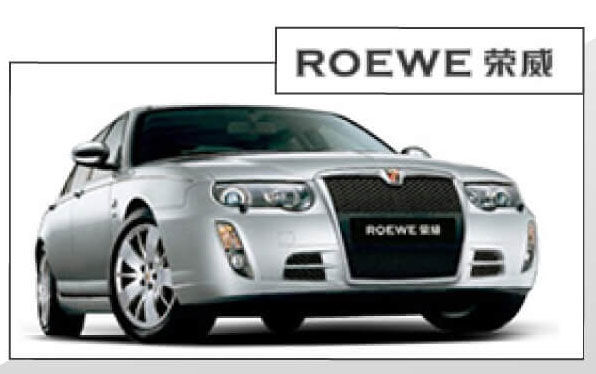

In the history of more than 120 years of world automobile, British Automobile always adheres to its traditional style, pursues noble and elegant modeling, pays attention to the comfort of Royal riding, and has a persistent preference for excellent power performance and sense of control.
Based on the technology core of Rover 75, Roewe, the first international brand of China's automobile industry, created by the brand-new interpretation of British quality gene and comprehensive integration of European luxury car technology, inherits the classic British traditional style, elegance and gentlemanly taste, and persistently adheres to the car making aesthetics.
The core value of Roewe determines that Roewe Roewe is a new type of car designed for social enterprising groups who pursue taste and connotation, advocate classics and have innovative spirit, and achieve achievements in a self-confident and friendly way. Therefore, whether Roewe 750 or new car 550, we can see things that come down in one continuous line.
Gao Weimin, general manager of SAIC technology center, said in an exclusive interview with the media that from the Rongwei 750 and Rongwei 550, which are now on the market, we can see what is inherited. The basic feature of British cars with 100 years of industrial experience is elegant shape, or "cigar type" body, which is also a classic thing for Rongwei brand to inherit and follow. But on this basis, we have to extract our own Roewe DNA according to the cultural characteristics and market demand of China's automobile market.
Copyright: A56664381 Simon SU